| The parts rooms are drawn from |
Rooms are drawn by an interpreter (DO_ROOM_COMMAND, MORE_ROOM_COMMANDS) from commands: points, lines between them, mode bits that make points relative or mirrored, repeats, fills, and parts -- shared runs of commands that any room, or any part, can call with $E0 or $E1 and a number. There are 56 parts, laid out one after another from $758C, each a length and its commands; DRAW_PART (in MORE_ROOM_COMMANDS) finds part n by walking the lengths from the first. $E1 keeps the drawing's points, mode and origin round the part, $E0 does not, and a part draws with whatever state its caller left -- where it appears depends on the point it is called at. A part may also place objects and set the room's walls (object mode, $E4 $04); what it places is drawn later, as the room is entered (DRAW_STILL_THINGS), not by the interpreter.
So each part is shown here as the game draws it in a real room: the first room, in room order, whose drawing calls it, drawn by DRAW_CURRENT_ROOM in SkoolKit's simulator and stopped where DRAW_PART calls the interpreter for the part and where that call returns. A room is drawn black on black and coloured all at once afterwards (ATTRI); each picture here is in the colours that room is then given, its ink on its paper, and a part no room draws is in black on white. What the part drew is in the room's ink, and the room as far as it had been drawn is faded towards the paper, with magenta, the page's own colour and not the game's, where the part cleared ink the room had drawn (parts 8, 16); the picture is cut to what the part changed, and includes what the parts it calls draw. A large black area is a fill, usually with solid ink (texture 3), which the rooms use for what lies beyond their walls. The parts each room drew in the simulator were checked against the parts its commands name, for every room. Part 17 is the one most rooms draw (78 of them): the corner in front of the room's floor, bottom left, that LIFE is printed on (see the panel).
No room draws parts 9, 11, 12, 33, 52; they are drawn alone, from the point the drawing starts at (50, 50).
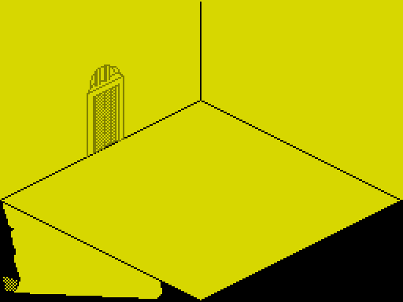
Besides lines it fills with texture 3; draws part 17; sets the room's floor, ceiling and walls (patch $E6). It is drawn in 13 rooms: 2, 13, 20, 28, 34, 41, 47, 48, 49, 50, 61, 71, 72; called by part 2.
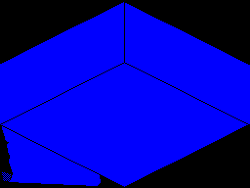
Besides lines it fills with texture 3; draws part 1. It is drawn in 12 rooms: 13, 20, 28, 34, 41, 47, 48, 49, 50, 61, 71, 72; called by part 28.
Drawn as room 2 draws it, in its colours.
Besides lines it does nothing. It is drawn in 6 rooms: 2, 21, 23, 24, 25, 26; called by part 14, part 27.
Drawn as room 2 draws it, in its colours.
Besides lines it does nothing. It is drawn in 28 rooms: 2, 20, 21, 25, 26, 28, 29, 34, 35, 41, 42, 44, 45, 46, 47, 49, 50, 57, 62, 63, 64, 65, 71, 72, 75, 76, 77, 78; called by part 5, part 6, part 34.
Drawn as room 2 draws it, in its colours.
Besides lines it fills with texture 11; draws part 4. It is drawn in 1 room: 2.
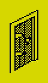
Besides lines it fills with texture 11; draws part 4. It is drawn in 21 rooms: 20, 21, 25, 26, 28, 29, 34, 35, 41, 42, 45, 46, 47, 57, 62, 63, 64, 65, 71, 72, 77; called by part 14, part 28.
Drawn as room 56 draws it, in its colours.
Besides lines it fills with texture 1. It is drawn in 2 rooms: 56, 68; called by part 47.
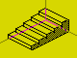
Besides lines it fills with texture 0; places an invisible box ×5. It is drawn in 2 rooms: 2, 34.
Draws nothing on the screen (alone, from the drawing's starting state, in black on white: no room draws it).
Besides lines it nothing: the part is empty. It is drawn in no room.
Drawn as room 9 draws it, in its colours.
Besides lines it fills with texture 3. It is drawn in 4 rooms: 9, 12, 31, 37; called by part 11, part 36.
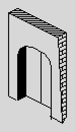
Besides lines it fills with texture 7, texture 6, texture 1; draws part 10. It is drawn in no room.
Drawn alone, from the drawing's starting state, in black on white: no room draws it.
Besides lines it does nothing. It is drawn in no room.
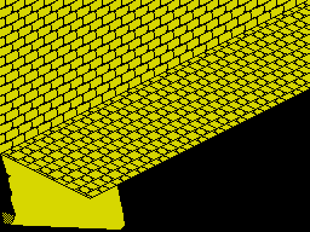
Besides lines it fills with texture 16, texture 3, texture 13; draws part 17; places a small hunched figure, a small flame; sets the room's floor, ceiling and walls (patch $E7). It is drawn in 10 rooms: 15, 16, 17, 18, 19, 21, 25, 26, 39, 40; called by part 14, part 18.
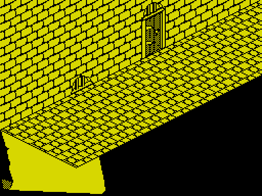
Besides lines it draws part 6, part 3, part 3, part 13. It is drawn in 3 rooms: 21, 25, 26.
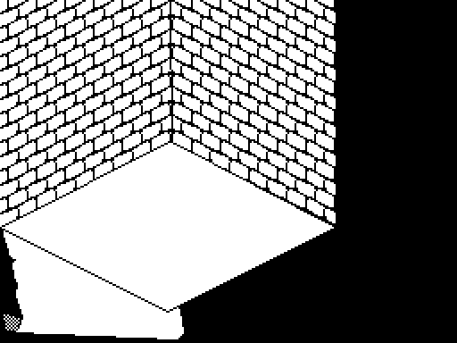
Besides lines it fills with texture 16, texture 15, texture 3; draws part 17; sets the room's floor, ceiling and walls (patch $E8). It is drawn in 7 rooms: 14, 22, 23, 24, 56, 68, 69; called by part 27, part 47.
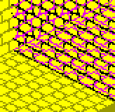
Besides lines it fills with texture 15; draws lines only into the clean copy ($E4 $00), to bound a fill. It is drawn in 4 rooms: 17, 19, 26, 40; called by part 18.
Drawn as room 2 draws it, in its colours.
Besides lines it fills with texture 3, texture 0. It is drawn in 78 rooms: 2, 3, 4, 5, 6, 7, 8, 9, 10, 11, 12, 13, 14, 15, 16, 17, 18, 19, 20, 21, 22, 23, 24, 25, 26, 27, 28, 29, 30, 31, 32, 33, 34, 35, 36, 37, 38, 39, 40, 41, 42, 43, 44, 45, 46, 47, 48, 49, 50, 51, 52, 53, 54, 55, 56, 57, 58, 59, 60, 61, 62, 63, 64, 65, 66, 67, 68, 69, 70, 71, 72, 73, 74, 75, 76, 77, 78, 80; called by part 1, part 13, part 15, part 19, part 20, part 21, part 26, part 35, part 36.
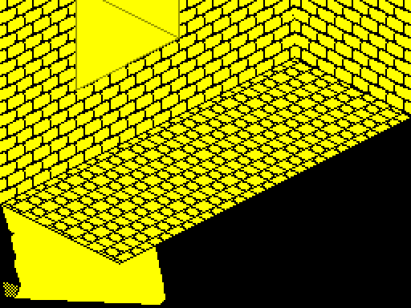
Besides lines it draws part 13, part 16. It is drawn in 3 rooms: 17, 19, 40.
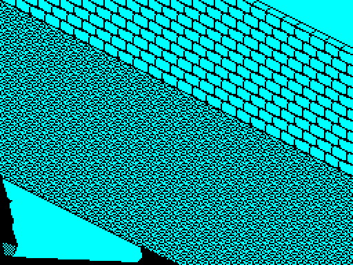
Besides lines it fills with texture 21, texture 3, texture 15; draws part 17, part 25; sets the room's floor, ceiling and walls (patch $E6). It is drawn in 2 rooms: 30, 31.
Drawn as room 35 draws it, in its colours.
Besides lines it fills with texture 3; draws part 56, part 17; sets the room's floor, ceiling and walls (patch $E9). It is drawn in 4 rooms: 35, 36, 70, 73.
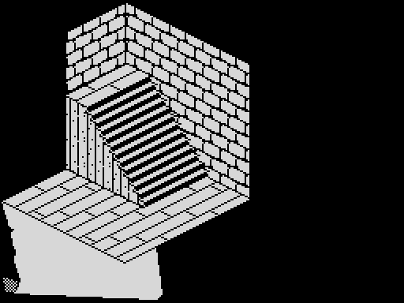
Besides lines it fills with texture 3, texture 3, texture 16, texture 15, texture 3, texture 17, texture 17, texture 14, texture 14; draws part 17; places an invisible box ×13; sets the room's floor, ceiling and walls (patch $EB). It is drawn in 12 rooms: 53, 54, 55, 57, 58, 59, 60, 64, 65, 66, 67, 77; called by part 22.
Drawn as room 54 draws it, in its colours.
Besides lines it fills with texture 16, texture 17; draws part 21. It is drawn in 7 rooms: 54, 55, 58, 59, 60, 66, 67.
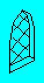
Besides lines it does nothing. It is drawn in 4 rooms: 32, 39, 40, 61.
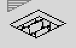
Besides lines it fills with texture 16. It is drawn in 3 rooms: 56, 61, 68; called by part 47.
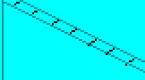
Besides lines it does nothing. It is drawn in 3 rooms: 29, 30, 31; called by part 19.
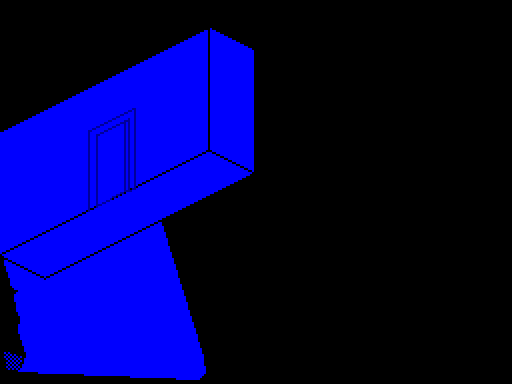
Besides lines it fills with texture 3; draws part 17; sets the room's floor, ceiling and walls (patch $EE). It is drawn in 3 rooms: 44, 63, 76; called by part 34.
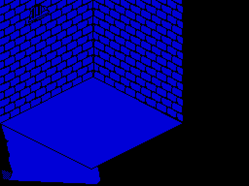
Besides lines it draws part 3, part 15. It is drawn in 2 rooms: 23, 24.
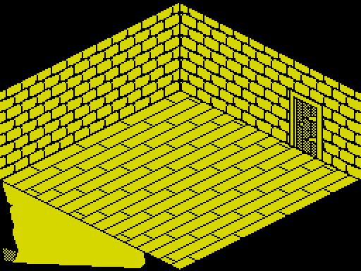
Besides lines it fills with texture 17, texture 16, texture 15; draws part 6, part 2. It is drawn in 2 rooms: 71, 72.
Drawn as room 74 draws it, in its colours.
Besides lines it does nothing. It is drawn in 1 room: 74.
Drawn as room 3 draws it, in its colours.
Besides lines it does nothing. It is drawn in 9 rooms: 3, 4, 5, 6, 7, 8, 10, 11, 74.
Drawn as room 3 draws it, in its colours.
Besides lines it fills with texture 3. It is drawn in 5 rooms: 3, 6, 7, 8, 74.
Drawn as room 74 draws it, in its colours.
Besides lines it does nothing. It is drawn in 1 room: 74.
Draws nothing on the screen (alone, from the drawing's starting state, in black on white: no room draws it).
Besides lines it nothing: the part is empty. It is drawn in no room.
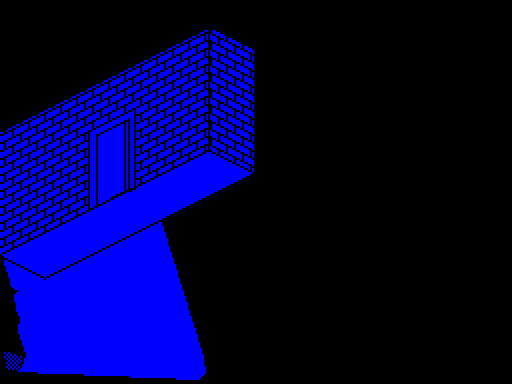
Besides lines it fills with texture 7, texture 6; draws part 4, part 26. It is drawn in 2 rooms: 44, 63.
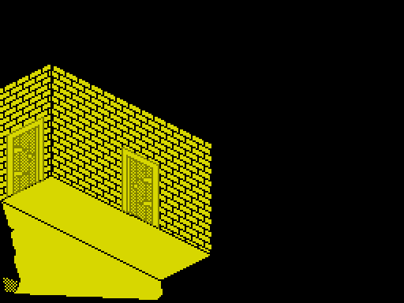
Besides lines it fills with texture 3, texture 6, texture 7; draws part 17; sets the room's floor, ceiling and walls (patch $EC). It is drawn in 2 rooms: 42, 75.
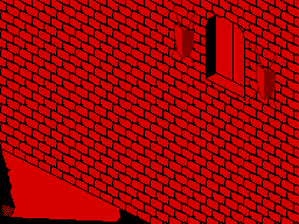
Besides lines it fills with texture 15, texture 0; draws part 17, part 51, part 10; places an invisible slab; sets the room's floor, ceiling and walls (patch $F8). It is drawn in 2 rooms: 9, 12.
Drawn as room 5 draws it, in its colours.
Besides lines it does nothing. It is drawn in 5 rooms: 5, 6, 7, 10, 11.
Draws nothing on the screen (as room 15 draws it, in its colours).
Besides lines it places a small crate ×2, a chest ×3, a tub ×6. It is drawn in 3 rooms: 15, 18, 33.
Draws nothing on the screen (as room 20 draws it, in its colours).
Besides lines it places a flat square slab ×3, a goblet or a stand ×2. It is drawn in 4 rooms: 20, 56, 61, 71.
Draws nothing on the screen (as room 49 draws it, in its colours).
Besides lines it places a flat square slab ×4, an upright slab, the other way ×4. It is drawn in 1 room: 49.
Draws nothing on the screen (as room 50 draws it, in its colours).
Besides lines it places a flat square slab ×4, an upright slab, the other way ×4. It is drawn in 1 room: 50.
Draws nothing on the screen (as room 16 draws it, in its colours).
Besides lines it places a chest ×2. It is drawn in 4 rooms: 16, 19, 45, 46; called by part 43.
Draws nothing on the screen (as room 16 draws it, in its colours).
Besides lines it draws part 42. It is drawn in 4 rooms: 16, 19, 45, 46.
Draws nothing on the screen (as room 41 draws it, in its colours).
Besides lines it places the end of a bench ×2, a bed. It is drawn in 4 rooms: 41, 61, 71, 72; called by part 46.
Draws nothing on the screen (as room 54 draws it, in its colours).
Besides lines it places a chequered ball. It is drawn in 3 rooms: 54, 64, 65.
Draws nothing on the screen (as room 41 draws it, in its colours).
Besides lines it draws part 44. It is drawn in 3 rooms: 41, 71, 72.
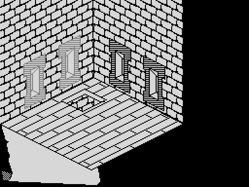
Besides lines it fills with texture 17; draws part 24, part 7, part 7, part 15. It is drawn in 2 rooms: 56, 68.
Drawn as room 9 draws it, in its colours.
Besides lines it fills with texture 3. It is drawn in 9 rooms: 9, 36, 40, 43, 47, 49, 70, 73, 78.
Draws nothing on the screen (as room 19 draws it, in its colours).
Besides lines it places a flat square slab, a tall pole ×4. It is drawn in 4 rooms: 19, 28, 45, 51.
Draws nothing on the screen (as room 22 draws it, in its colours).
Besides lines it places a bed. It is drawn in 2 rooms: 22, 23.
Draws nothing on the screen (as room 9 draws it, in its colours).
Besides lines it places a flat square slab ×2. It is drawn in 7 rooms: 9, 12, 17, 24, 41, 69, 75; called by part 36.
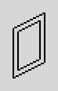
Besides lines it does nothing. It is drawn in no room.
Draws nothing on the screen (as room 48 draws it, in its colours).
Besides lines it places a chest ×2. It is drawn in 1 room: 48.
Draws nothing on the screen (as room 13 draws it, in its colours).
Besides lines it places a round table ×2. It is drawn in 3 rooms: 13, 47, 48.
Draws nothing on the screen (as room 13 draws it, in its colours).
Besides lines it places a flat square slab ×2, an upright slab ×6, an upright slab, the other way. It is drawn in 2 rooms: 13, 14.
Draws nothing on the screen (as room 35 draws it, in its colours).
Besides lines it places a small hunched figure, a small flame. It is drawn in 5 rooms: 35, 36, 38, 70, 73; called by part 20.